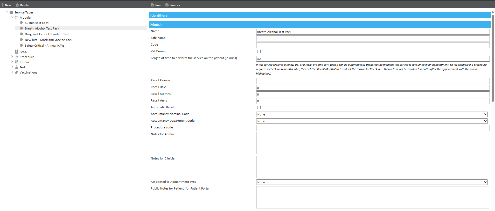
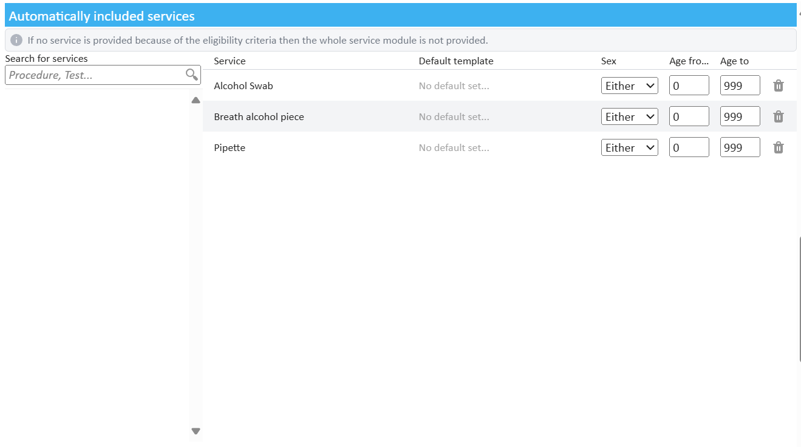
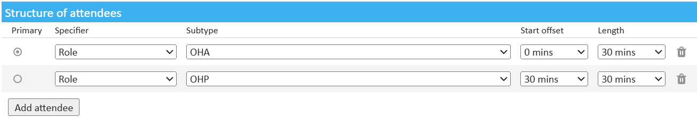

Modules can help you create appointments with complex requirements, multiple services and attendees all within a single click. To create a module, begin by going to ‘Start Page’ > ‘Admin’ > ‘Service Management’ and click ‘New’ > ‘Module’.
The module configuration page contains largely the same configuration options as with other services so configure this service as usual. Towards the bottom of the page you will find additional configuration fields:

Modules can also be associated with specific appointment types. So when booking via the slot finder, only the relevant modules are available to be selected. Also, by selecting an appointment type from the drop down menu, patients booking from the patient portal will only be able to select modules associated with this appointment type.
Please note, only 1 appointment type can be associated with a module.
To add services to a module, search for your service from the ‘Services which make up the module’ section. You can search by code or any string of letters that appears in the service name. Click search to display all services that match your search criteria then click on the service you wish to add.
Once you have added the group of services to provide with this module, you may further specify the patients who qualify for this service by selecting a specific sex or age range who may receive these services. If you add a module where the patient does not meet the requirements for a specific service, only this service will not be provided, the rest of the module will be provided as usual.

Modules can also be configured so that specific attendees are required for the appointment to take place, these attendees may be required at the same time, or staggered over the duration of the module.
To add attendees to your module, go to the ‘Structure of Attendees’ section and click ‘Add Attendee’. The next step is to select a specifier; this will be either a role group or specialism. Continue by selecting the required role or specialism, and repeat these steps as many times as required depending on the number of attendees the module needs. The primary attendee will be marked with a checkbox.
You may define the time an attendee arrives by using the ‘Start Offset’ dropdown. The length of time the clinician must attend the appointment is defined by the ‘Length’ dropdown. The sum of the times stated here override the ‘Length of time to perform the service on the patient (in mins)’.
Please note, this feature only works when booking via the Slot Finder. Using the slot finder with this module applied, will now only return results for times when all clinicians are available at their allotted times.
